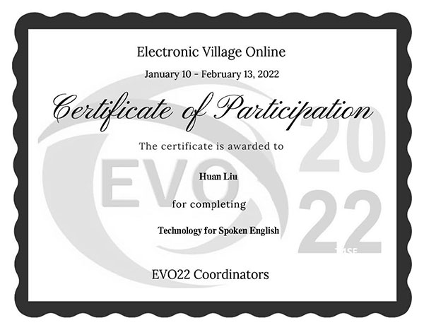

Moodle for Teachers Professional Development Programs
This project is for one of my courses, The Technology for Spoken English. Except for taking the regular classes, I also spent 5 weeks taking the online Moodle classes. I chose Technology for Spoken English among the other 10 different choices.
Reflection
In these 5 weeks, I learned more than 20 websites or applications for teaching speaking to speakers of other languages.

Public Library Teaching Program
This teaching program is for one of my courses, Grammar Study. We observe and teach different English grammar to English Language Learners (ELL) in the local Auburn Public Library.
Reflection
I applied the knowledge and teaching strategies I learned from my master's classes, such as how to create curriculum, design lesson plans, collaborate with co-teachers, reflect teaching process, etc.